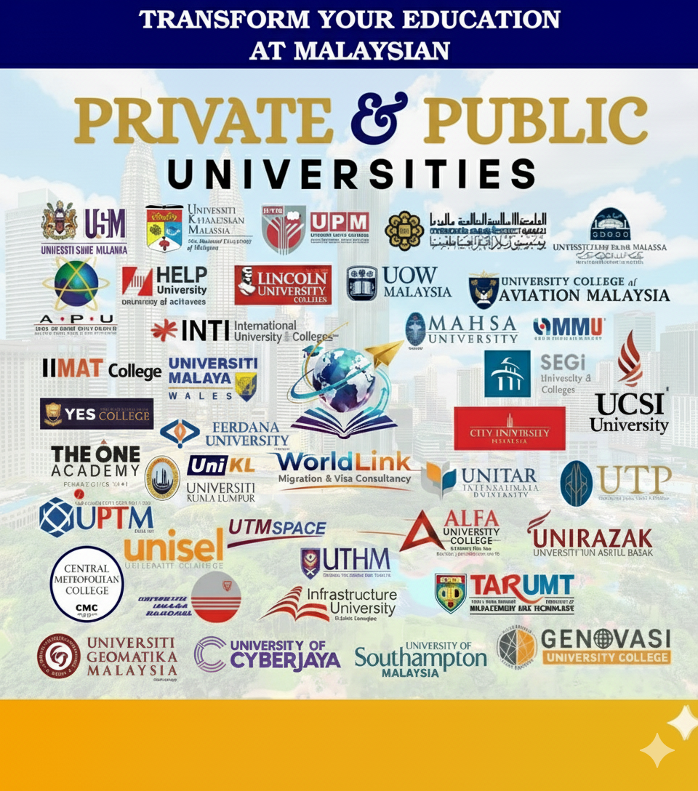

Study in Malaysia from Bangladesh | Visa - Scholarship - Cost & Admission Process
Malaysia is one of the most developing countries in the world which has no political conflict and it emerged as a newly industrialized market in Asia. Nowadays Malaysia is one of the best study destinations for students from different parts of the world especially Bangladesh.
Every year Malaysia welcomes a huge number of international students from abroad. It is one of the best places in Asia to live in. People from different parts of the world choose Malaysia as their study destination because of its huge facilities.
Contact Us
Study in Malaysia from Bangladesh
Malaysia in Brief
- Capital: Kuala Lumpur
- Largest City: Kuala Lumpur
- GDP: $ 434.059 Billion
- Universities: 590
- Currency: Ringgit
- Population: 32.7 Million
- Students: 1.2 million
- Language: Malay
Why Study in Malaysia from Bangladesh?
Malaysia is a country that is Geographically safe, and free from all-natural calamities. As a study destination, Malaysia is considered one of the most secure places for international students, especially from Muslim countries all over the world.
The education system of Malaysia is almost similar to other EU countries. All these beautiful features attract international students to study in Malaysia.
Malaysia is one of the best study destinations for Bangladeshi students because of its good education systems with affordable cost. Tuition fees in Malaysia are less than in any other EU country.
Students can get a quality education with minimum tuition fees.
Top Cities in Malaysia for Bangladeshi Students
Malaysia has many cities with universities that welcome international students, including Bangladeshi students. Here are some of the top cities in Malaysia for Bangladeshi students to consider:
- Kuala Lumpur
- Penang
- Johor Bahru
- Kota Kinabalu
- Shah Alam
These cities offer a variety of options for Bangladeshi students who are looking for quality education and a great student experience in Malaysia.
Study in Malaysia from Bangladesh
Popular Courses in Malaysia for International Students
Malaysia is an increasingly popular destination for international students, offering a range of courses across multiple disciplines. Here are some of the popular courses in Malaysia for international students:
- Engineering Read more ⤏
- Accounting Read more ⤏
- Economics Read more ⤏
- Computer & IT Read more ⤏
- Law & Legal Studies Read more ⤏
- Health & Medicine Read more ⤏
- Language & Culture Read more ⤏
- Art & Design Read more ⤏
Scholarships in Malaysia for Bangladeshi Students
Malaysian Universities offer scholarships for international students to manage their expenses. Students applied for scholarships in undergraduate and postgraduate study programs. The types of scholarships are as follows:
- Khazanah Global Scholarship.
- MyBrainSc Scholarship.
- Shell Malaysia Overseas Undergraduate Scholarship Awards.
- Bank Negara Scholarships.
- JPA Scholarship – Program JKPJ.
- UEM Group Undergraduate Overseas Scholarship.
- The Fulbright Program.
- British Council GREAT Scholarships for Malaysian Students.
Scholarships in Malaysia for Bangladeshi Students
Steps to Study in Malaysia from Bangladesh
If you are a Bangladeshi student interested in studying in Malaysia, here are some steps you can follow:
- Research Universities and Courses: Start by researching universities and courses in Malaysia that suit your interests and academic goals. You can use online resources to find information about universities, courses, admission requirements, tuition fees, and scholarships.
- Check Eligibility: Check the eligibility criteria for the university and course you are interested in. Make sure you meet the minimum academic requirements, English language proficiency requirements, and any other specific requirements.
- Apply to Universities: Check the application deadlines and submit your application along with all required documents, such as academic transcripts, English language proficiency test results, and passport copy.
- Apply for a Student Visa: After receiving an offer of admission, you will need to apply for a student visa to study in Malaysia. You can apply for a visa through the Malaysian embassy or consulate in Bangladesh.
Intakes in Malaysia
There are typically two intakes in Malaysia. Here is some information on each intake:
| Intakes | Duration |
|---|---|
| September Intake | September February |
| February Intake | March to August |
Top Universities in Malaysia
Here are some of the top universities in Malaysia for international students:
- The International Islamic University of Malaysia
- The National University of Malaysia
- The University of Malaysia Kelantan
- The University of Malaysia Pahang
- The University of Malaysia Perlis
- University of Malaysia Sabah
- The University of Malaysia Sarawak
Your Consultant Monirul Hoque
HAVE ANY QUESTION?
Our consultant will help you find the best study destination.
Call: +880-1615-000125
Google Logo
GOOGLE REVIEW
4.7
Review Star
150+ reviews
Tuition Fees in Malaysia for Bangladeshi Students
The Tuition fees in Malaysia for Bangladeshi students can vary depending on the university, course of study, and level of study. Here is a rough estimate of the tuition fees for undergraduate and postgraduate courses for Bangladeshi students in Malaysia:
Undergraduate Programs:
| Public Universities | Private Universities |
|---|---|
| Approx. 370,000 to 555,000 BDT Per Year | Approx. 462,500 to 925,000 BDT Per Year |
Postgraduate Programs:
| Public Universities | Private Universities |
|---|---|
| Approx. 277,000 to 462,500 BDT Per Year | Approx. 462,500 to 925,000 BDT Per Year |
Cost of Living in Malaysia for International Students
The cost of living in Malaysia for international students can vary depending on various factors such as the city of study, lifestyle, accommodation, food, transportation, and personal expenses.
Here is a breakdown of the estimated monthly living expenses for international students in Malaysia:
| Expenses Category | Approximate Cost (Monthly) |
|---|---|
| Rent per month | Approx. 7,400 to 14,800 BDT Per Month |
| Food and housekeeping | Approx. 11,100 to 14,800 BDT Per Month |
| Utilities | Approx. 3,700 to 7,400 BDT Per Month |
| Phone and Internet | Approx. 1,850 to 2,775 BDT Per Month |
| Books and Study Materials | Approx. 1,850 to 3,700 BDT Per month |
| Travel & transport | Approx. 1,850 to 2,775 BDT Per Month |
Malaysian Visa Requirements for Bangladeshi Students
- Valid Passport
- Academic Transcripts & Certificate
- Evidence of a full-time course of study that has been approved by the Minister of Home
- Proof of Funds / Financial Documents Solvency Certificate
- SOP
- Academic/Job Reference letter
- Medical test result
- Health Insurance payment
- Visa Appointment Letter
Malaysian Visa Requirements for Bangladeshi Students
Why Choose Sangen?
Sangenbd is one of the best study-abroad agencies in Dhaka, Bangladesh. It provides support, information, and guidance to students who are interested in studying in Malaysia.
Here are some reasons why you choose Sangen for your study abroad journey:
- Student Counseling Service Student Counseling Consultancy ⤏
- Visa Processing Visa Processing Support ⤏
- Fulbright Scholarship Scholarships Support ⤏
- Travel Guideline Travel Guidelines ⤏
- Post Departure Support Post Departure Support ⤏
Other Countries You May Apply
There are many countries around the world that offer excellent opportunities for higher education. Each country has its own unique education system, culture, and visa requirements for international students.
Here are some popular destinations for international students:
- Study in Canada Study in Canada ⤏
- Study in the USA Study in USA ⤏
- Study in Australia Study in Australia ⤏
- Study in Europe Study in Europe ⤏
Related Blogs and Articles Regarding Study Abroad
- Study in USA from Bangladesh Read More ⤏
- BMDC Approved Medical Universities Read More ⤏
- GRE Exam Read More ⤏
Read Our Student Reviews
Frequently Asked Questions
Some popular courses for Bangladeshi students to study in Malaysia are engineering, business, computer science, medicine, and hospitality.